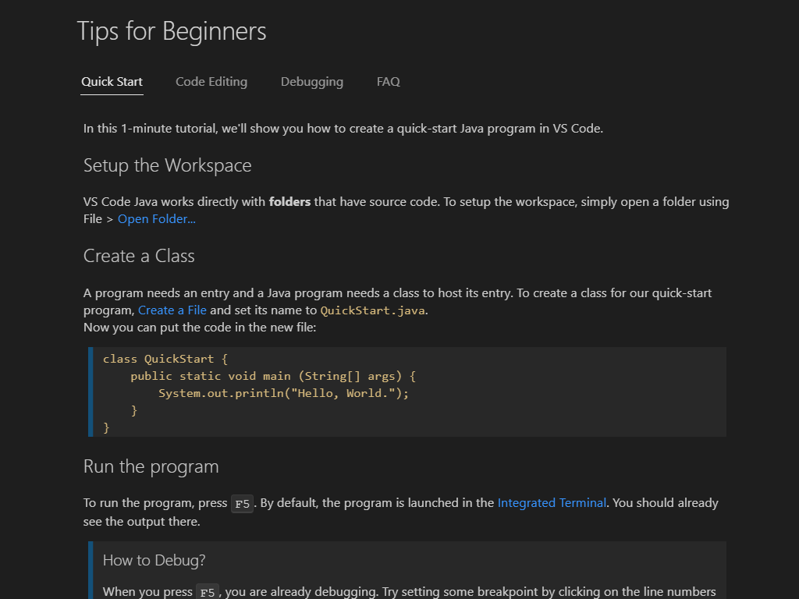
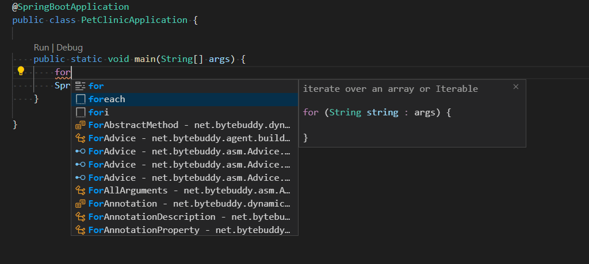

在 Visual Studio Code 中使用 Java
Visual Studio Code 通过丰富的扩展提供对 Java 的支持。结合 VS Code 核心的强大功能，这些扩展为您提供了一个轻量且高性能的代码编辑器，同时也支持许多最常见的 Java 开发技术。
本文将为 Java 开发者概述 Visual Studio Code 的各类功能。如需快速了解如何使用 Visual Studio Code 编辑、运行和调试 Java 程序，请使用下方的Java 入门教程按钮。
概述
VS Code 提供基本的语言功能，例如代码补全、重构、代码检查、格式化和代码片段，以及便捷的调试和单元测试支持。VS Code 还与 Maven、Tomcat、Jetty 和 Spring Boot 等工具和框架集成。凭借 Visual Studio Code 的强大功能，Java 开发者获得了一个出色的工具，既可以快速编辑代码，也可以进行完整的调试和测试流程。如果您正在寻找一款具备以下特点的工具，那么它是您 Java 工作的绝佳选择：
- 快速、轻量、免费且开源。
- 支持多种语言，不仅仅是 Java。
- 无需安装和学习复杂的 IDE 即可开启 Java 之旅。
- 提供出色的微服务支持，包括流行的框架、容器工具和云集成。
- 提供基于团队的协作功能，例如 Visual Studio Live Share。
- 通过 IntelliSense 和其他代码感知编辑功能提升您的工作效率。
安装 Visual Studio Code for Java
为了帮助您快速设置，我们推荐您使用 Coding Pack for Java，它是 VS Code、Java Development Kit (JDK) 以及 Microsoft 推荐的一系列扩展的捆绑包。Coding Pack 也可用于修复现有的开发环境。
安装 Coding Pack for Java - Windows
安装 Coding Pack for Java - macOS
注意：Coding Pack for Java 仅适用于 Windows 和 macOS。对于其他操作系统，您需要手动安装 JDK、VS Code 和 Java 扩展。
如果您已安装 VS Code 并希望为其添加 Java 支持，我们推荐使用 Extension Pack for Java，它是 Microsoft 推荐的一系列扩展的集合：
- Language Support for Java™ by Red Hat
- Debugger for Java
- Test Runner for Java
- Maven for Java
- Project Manager for Java
- Visual Studio IntelliCode
或者，您也可以自行安装流行的 Java 扩展来为 VS Code 添加 Java 语言支持。
下载 VS Code - 如果您尚未下载 VS Code，请快速为您的平台（Windows、macOS、Linux）安装。
还有其他流行的 Java 扩展可供您根据自身需求选择，包括：
- Spring Boot Extension Pack
- Gradle for Java
- Community Server Connectors（适用于 Apache Felix、Karaf、Tomcat、Jetty 等）
- Server Connector（Red Hat 服务器，例如 Wildfly）
- Extension Pack for MicroProfile
- CheckStyle
- SonarLint
得益于 VS Code 周围优秀的 Java 社区，列表不止于此。您可以轻松地在 VS Code 中搜索更多 Java 扩展：
- 转到扩展视图 (
kb(workbench.view.extensions))。 - 通过输入 "java" 来筛选扩展列表。
本文档介绍了这些 Java 扩展中包含的一些关键功能。
>注意：为帮助您入门 Java 开发，您可以使用 Java 通用配置文件模板来安装有用的扩展。您可以在 VS Code 中的配置文件中了解有关配置文件以及如何快速为不同编程语言和工作流程重新配置编辑器的更多信息。
入门
注意： 如果您在 Windows 上使用 VS Code 并希望利用 Windows Subsystem for Linux，请参阅在 WSL 中进行开发。
安装 Java Development Kit (JDK)
Java Development Kit (JDK) 是用于开发 Java 应用程序的软件开发环境。要在 Visual Studio Code 中运行 Java，您需要安装 JDK。Extension Pack for Java 支持 Java 1.8 及以上版本。
我们建议您考虑从以下来源之一安装 JDK：
- Amazon Corretto
- Azul Zulu
- Eclipse Adoptium's Temurin
- IBM Semeru Runtimes
- Microsoft Build of OpenJDK
- Oracle Java SE
- Red Hat build of OpenJDK
- SapMachine
注意：如果您安装了多个 JDK 并且需要为项目使用特定的 JDK 版本，请参阅为项目配置运行时。要启用 Java 预览功能，请参阅如何将 VS Code 与新版 Java 配合使用。
对于刚接触 Java 或刚接触 VS Code 的开发者，我们在扩展中提供了一些提示。安装 Extension Pack for Java 后，您可以通过 VS Code 命令面板中的 Java: Tips for Beginners 命令查看这些提示。
打开命令面板 (kb(workbench.action.showCommands)) 并输入 "java tips" 来选择该命令。

使用 Java 源文件
您可以使用 VS Code 读取、写入、运行和调试 Java 源文件，而无需创建项目。VS Code for Java 支持两种模式，轻量模式和标准模式。轻量模式非常适合仅处理源文件的场景。如果您想要处理完整的项目，则需要使用标准模式。需要时，您可以轻松地从轻量模式切换到标准模式。要了解更多信息，请参阅轻量模式。
使用 Java 项目
在 VS Code 中使用 Java 需要了解三件事：
- VS Code 如何处理工作区？
- VS Code 如何处理 Java？
- VS Code 如何处理包含 Java 的工作区？
VS Code 工作区
在 Visual Studio Code 中，"工作区"是指一个或多个文件系统文件夹（及其子文件夹）及其所有 VS Code 配置的集合，这些配置在该"工作区"在 VS Code 中打开时生效。VS Code 中有两种"工作区"，"文件夹工作区"和"多根工作区"。
当您在 VS Code 中打开一个文件系统文件夹（目录）时，VS Code 会呈现一个"文件夹工作区"。
"多根工作区"可以引用来自文件系统不同位置的多个文件夹（目录），VS Code 会在文件资源管理器中一起显示工作区中所有文件夹的内容。要了解更多信息，请参阅多根工作区。
VS Code 中的 Java 项目
与 IntelliJ IDEA、NetBeans 或 Eclipse 等 IDE 不同，"Java 项目"的概念完全由扩展提供，而不是 VS Code 基础版本中的核心概念。在 VS Code 中处理"Java 项目"时，您必须安装必要的扩展才能处理这些项目文件。
例如，Maven、Eclipse 和 Gradle Java 项目通过 Language Support for Java™ by Red Hat 支持，该扩展利用 M2Eclipse（提供 Maven 支持）和 Buildship（通过 Eclipse JDT Language Server 提供 Gradle 支持）。
借助 Maven for Java，您可以从 Maven Archetypes 生成项目，浏览工作区中的所有 Maven 项目，并通过嵌入式资源管理器轻松执行 Maven 目标。项目也可以使用 Project Manager for Java 扩展来创建和管理。
Visual Studio Code 也支持在 Java 项目之外处理独立的 Java 文件，这在 Java 入门教程中有介绍。
包含 Java 项目的 VS Code 工作区
假设已安装必要的 Java 扩展，打开包含 Java 构件的 VS Code 工作区将使这些扩展理解这些构件并提供处理它们的选项。
有关 Java 项目支持的更多详细信息，请参阅 Visual Studio Code 中的 Java 项目管理和 Java 构建工具。
编辑
代码导航
Visual Studio Code 中的 Java 还支持源代码导航功能，例如搜索符号、速览定义和转到定义。Spring Boot Tools 扩展为 Spring Boot 项目提供了增强的导航和代码补全支持。
VS Code 的关键优势之一是速度。当您打开 Java 源文件或文件夹时，几秒钟内，借助轻量模式，您就可以通过大纲视图以及转到定义和转到引用等命令来浏览代码库。这在您首次打开项目时特别有用。
代码补全
IntelliSense 是语言功能的统称，包括跨所有文件和内置及第三方模块的智能代码补全（上下文方法和变量建议）。VS Code 通过 Language Support for Java™ by Red Hat 支持 Java 的代码补全和 IntelliSense。它还提供了被称为 IntelliCode 的 AI 辅助 IntelliSense，将您最可能使用的项目放在补全列表的顶部。
使用 AI 增强补全
GitHub Copilot 是一款 AI 驱动的代码补全工具，可以帮助您更快、更智能地编写代码。您可以在 VS Code 中使用 GitHub Copilot 扩展来生成代码，或从它生成的代码中学习。
GitHub Copilot 为多种语言和广泛的框架提供建议，它在 Python、JavaScript、TypeScript、Ruby、Go、C# 和 C++ 方面表现尤为出色。
您可以在 Copilot 文档中了解有关如何开始使用 Copilot 的更多信息。
代码片段
Visual Studio Code 支持大量流行的 Java 代码片段，以提升您的工作效率，例如 class/interface、syserr、sysout、if/else、try/catch、static main 方法。利用来自 Java 语言服务器的信息，它还在选择过程中提供代码片段的预览。
例如，输入 "sout" 或 "sysout" 将生成 System.out.println() 的代码片段。
类似地，输入 "main" 或 "psvm" 将生成 public static void main(String[] args) {} 的代码片段。
我们支持丰富的代码片段快捷方式和后缀补全功能。要查看完整列表，请参阅代码片段。VS Code 还支持一系列重构和代码检查功能。

调试
Debugger for Java 是一个基于 Java Debug Server 的轻量级 Java 调试器。它与 Language Support for Java™ by Red Hat 配合使用，允许用户在 Visual Studio Code 中调试 Java 代码。
启动调试会话非常简单：点击 main() 函数 CodeLens 中可用的 Run|Debug 按钮，或按 kb(workbench.action.debug.start)。调试器将自动为您生成合适的配置。
尽管它是轻量级的，但 Java 调试器支持高级功能，例如表达式求值、条件断点和热代码替换。有关更多调试相关信息，请访问 Java 调试。
测试
借助 Test Runner for Java 扩展的支持，您可以轻松运行、调试和管理 JUnit 和 TestNG 测试用例。
有关测试的更多信息，请阅读测试 Java。
Spring Boot、Tomcat 和 Jetty
为了进一步提高您在 VS Code 中的 Java 开发效率，社区为最流行的框架和工具创建了扩展，例如 Spring Boot、Tomcat 和 Jetty。
请参阅应用程序服务器以了解有关 VS Code 对 Tomcat 和 Jetty 以及其他应用程序服务器支持的更多信息。
Spring Boot 支持由 VMware 提供。还有 Microsoft 提供的 Spring Initializr Java Support 和 Spring Boot Dashboard 扩展，以进一步改善您在 Visual Studio Code 中使用 Spring Boot 的体验。
请参阅在 VS Code 中使用 Spring Boot 以了解有关 VS Code 中 Spring Boot 支持的更多信息，以及部署到 Azure Web Apps或部署到 Azure Spring Apps 以了解有关从 VS Code 将 Spring 应用部署到 Azure 的更多信息。
后续步骤
了解更多关于在 VS Code 中使用 Java 的信息：
继续阅读以了解更多关于 Visual Studio Code 的信息：